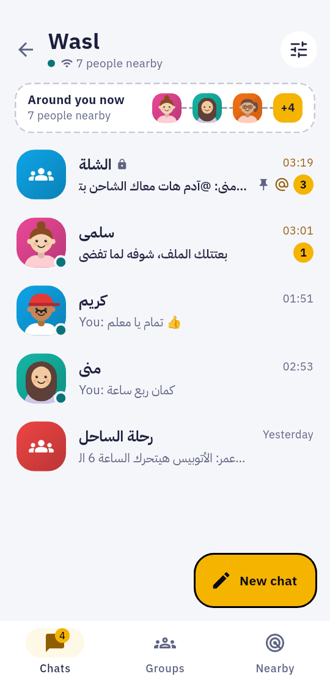
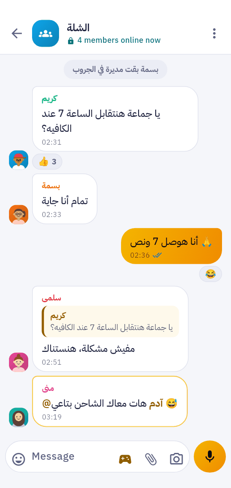
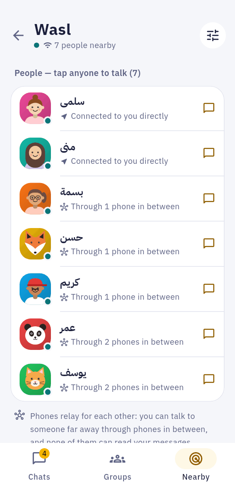
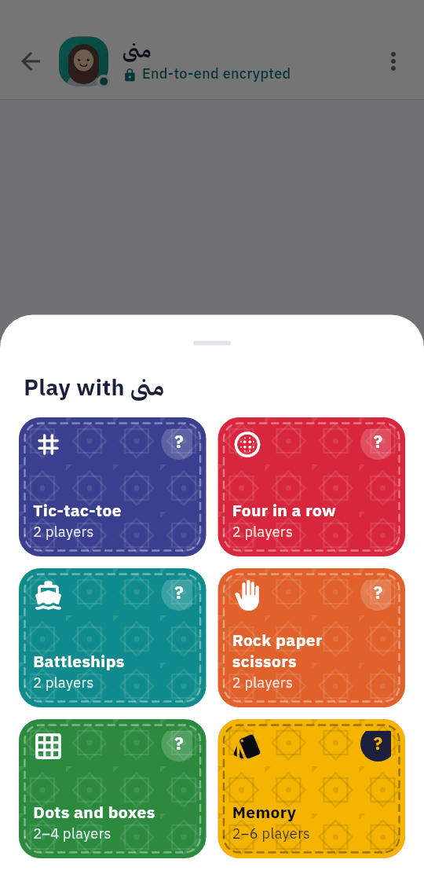
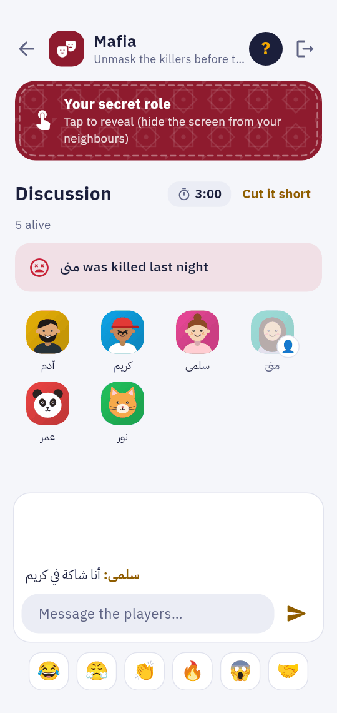
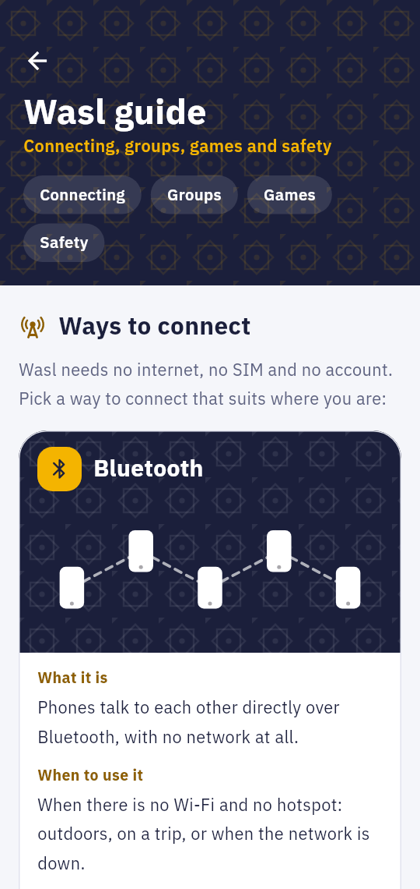

Why Wasl?
No internet needed
Bluetooth, Wi-Fi / hotspot, or both at once — your phone becomes a bridge between them.
Messages hop
Every phone relays to the next (up to 6), so a message reaches far beyond your own range.
Encrypted private chats
End-to-end encryption by default; relays can’t read anything. Safety codes to verify each other.
Nobody speaks for you
Your name and messages are signed with your key, and Wasl warns you when someone shows up with a name you know but isn’t them.
Wasl network
No router? Your phone makes its own Wi-Fi and people nearby join with one tap or a QR code.
Messages wait
If the person isn’t around, phones nearby carry your sealed message until they show up.
SOS
Ask everyone running Wasl around you for help with one tap.
Games in chats
Tic-tac-toe, battleships, memory, who’s the spy?, quiz, mafia and more.
Groups
Open, password or join-request groups with an owner and admins.
When do you need it?
When the network is down or overloaded: festivals, protests, stadiums, trips and deserts, campuses, power cuts and emergencies.
What it looks like






Your friend doesn’t have it?
Settings → “Share Wasl”: your phone opens a network, your friend scans two codes and downloads the app straight from your phone — no internet.
FAQ
Does Wasl need the internet?
No. It works over Bluetooth and Wi-Fi between nearby phones, with no internet, no data plan and no server.
How do I reach someone far away?
Messages hop through other phones running Wasl (up to 6). And if they’re not around right now, your message waits and reaches them when they show up.
Is it encrypted?
Private chats are end-to-end encrypted automatically. Details and known limits are written plainly in the security page on GitHub.
Is Wasl free?
Yes — free and open source (GPL-3.0), with no ads and no analytics.
Which phones?
Android 7 or newer. Starting a Wasl network needs Android 8+, joining one from inside the app Android 10+.